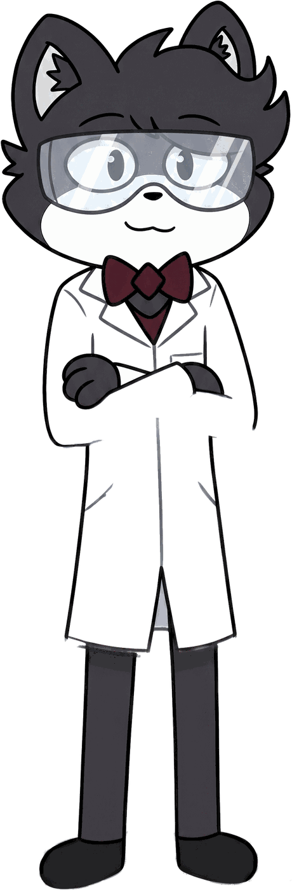

Hardware · Firmware
Labs
Controlador de reflujo
Plancha convertida en hotplate de reflujo con control PID, termopar tipo K (MAX6675), encoder y PWM sobre bus DC aislado.
Ingeniería electrónica embebida y de potencia. Diseño a nivel de datasheet, lazos de control analizados de verdad y protecciones que no dependen del software.

Hardware, firmware y control a la medida, bien hecho y documentado.
Firmware a nivel de registro sobre AVR, STM32 y 8051. Máquinas de estado, interrupciones y periféricos a la medida.
Convertidores DC-DC (boost, flyback), cargadores de baterías y control CC/CV. El lazo se analiza, no se ajusta a ciegas.
Del esquemático a la placa fabricable: ruteo, integridad de señal y diseño para fabricación casera o profesional.
Agentes y flujos con modelos locales (Ollama / Qwen) para automatizar tareas sin depender de la nube.
Plancha convertida en hotplate de reflujo con control PID, termopar tipo K (MAX6675), encoder y PWM sobre bus DC aislado.
Etapa boost controlada por STM32 con lazo CC/CV y anti-windup, alimentada por una fuente flyback aislada.
Diseño y diagnóstico del crossover de un sistema 2.1: impedancia, frecuencia de corte real y corrección de distorsión.
Cotizaciones en MXN. Cuéntame los requisitos.